В папке laba2 находятся необходимые файлы: file.tar.gz, image.png, index.php, скриншоты и др.
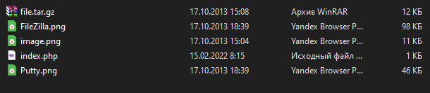
git init git add . git commit -m "first commit" git branch -M main git remote add origin https://github.com/MinhThuTanya/web-hw2.git git push -u origin main
Локальный репозиторий создан, все файлы добавлены, выполнена отправка на GitHub.
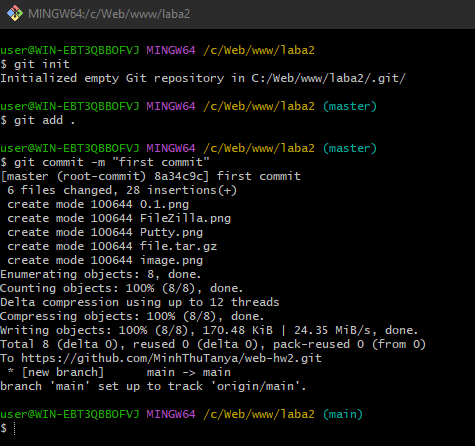
git clone git@github.com:MinhThuTanya/web-hw2.git mkdir -p ~/www/hw2 cp -r ~/web-hw2/* ~/www/hw2/
Репозиторий склонирован в домашнюю директорию, файлы скопированы в веб-доступный каталог ~/www/hw2.
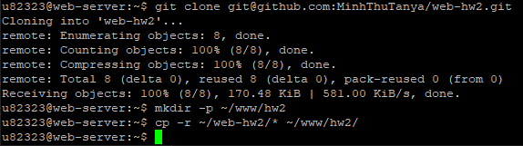
Все запросы для пунктов 1–7 были заранее набраны в текстовом редакторе для копирования в PuTTY.
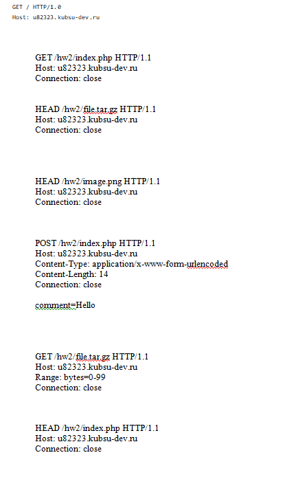
Для отправки запросов используется PuTTY в режиме Raw (прямое TCP-соединение). Адрес: u82323.kubsu-dev.ru, порт 80.
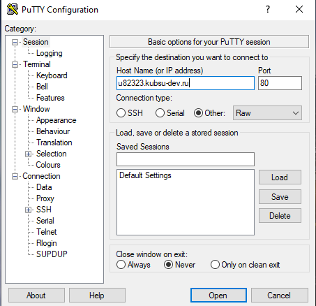
После открытия соединения появляется пустое окно, готовое для вставки HTTP-запросов.
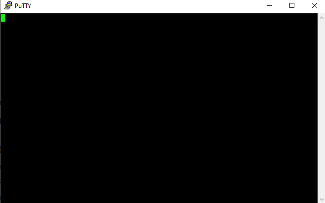
GET / HTTP/1.0 Host: u82323.kubsu-dev.ru
Запрос корневой директории сайта. В корне находится index.php, который возвращает вывод (ошибка подключения к БД не влияет на успешность).
Результат (скриншот 1.png):
HTTP/1.1 200 OKServer: Apache/2.4.58 (Ubuntu), Content-Length: 335, Content-Type: text/html; charset=UTF-8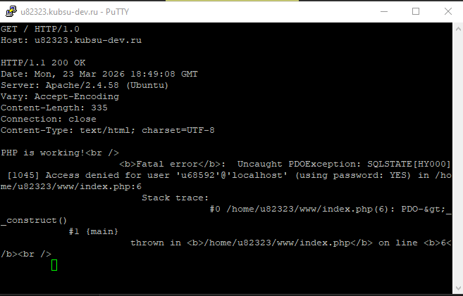
GET /hw2/index.php HTTP/1.1 Host: u82323.kubsu-dev.ru Connection: close
Запрос файла index.php из каталога /hw2/. Скрипт возвращает статус 404, но выполняет код и выводит данные.
Результат (скриншот 2.png):
HTTP/1.1 404 Not Found задан в файлеContent-Type: text/html; charset=UTF-8Array ( ) Привет, мир!Статус 404 (прописанный в файле) не мешает анализу содержимого.
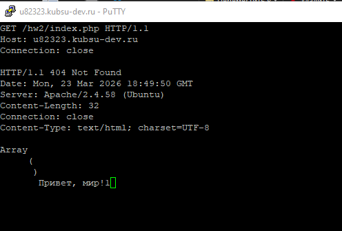
HEAD /hw2/file.tar.gz HTTP/1.1 Host: u82323.kubsu-dev.ru Connection: close
Метод HEAD возвращает только заголовки. Позволяет узнать размер файла из поля Content-Length.
Результат (скриншот 3.png):
HTTP/1.1 200 OKContent-Length: 11335 – размер в байтахContent-Type: application/x-gzip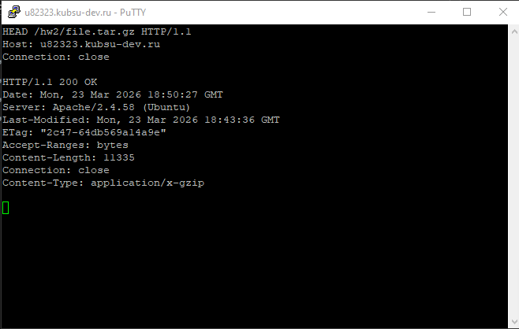
HEAD /hw2/image.png HTTP/1.1 Host: u82323.kubsu-dev.ru Connection: close
Аналогично пункту 3, определяем MIME-тип изображения.
Результат (скриншот 4.png):
HTTP/1.1 200 OKContent-Type: image/pngContent-Length: 10506 байт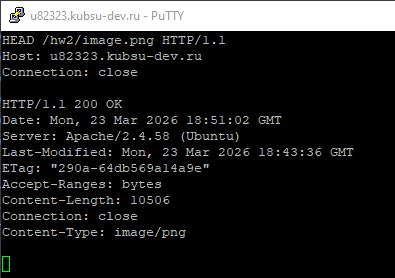
POST /hw2/index.php HTTP/1.1 Host: u82323.kubsu-dev.ru Content-Type: application/x-www-form-urlencoded Content-Length: 14 Connection: close comment=Hello
Тело запроса: comment=Hello (длина 14 байт).
Отправка POST-данных (имитация формы). Скрипт возвращает статус 404, но выводит содержимое массива $_POST.
Результат (скриншот 5.png):
HTTP/1.1 404 Not FoundArray ( [comment] => Hello ) Привет, мир!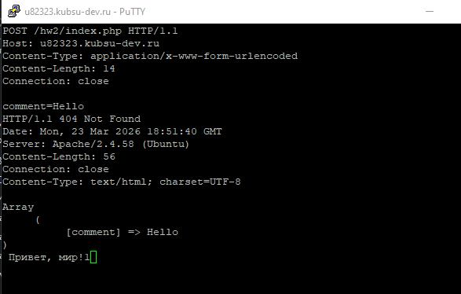
GET /hw2/file.tar.gz HTTP/1.1 Host: u82323.kubsu-dev.ru Range: bytes=0-99 Connection: close
Заголовок Range запрашивает только указанный диапазон байт – первые 100 байт архива.
Результат (скриншот 6.png):
HTTP/1.1 206 Partial ContentContent-Range: bytes 0-99/11335Content-Length: 100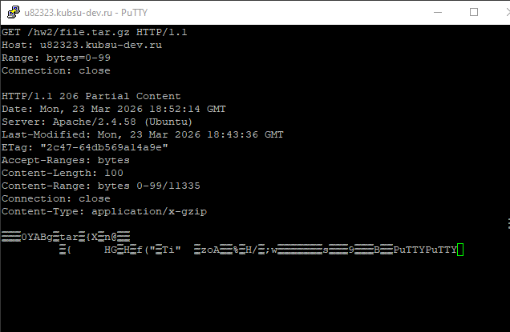
HEAD /hw2/index.php HTTP/1.1 Host: u82323.kubsu-dev.ru Connection: close
Запрос HEAD для получения заголовков. Кодировка указана в поле Content-Type.
Результат (скриншот 7.png):
HTTP/1.1 404 Not FoundContent-Type: text/html; charset=UTF-8 – кодировка UTF-8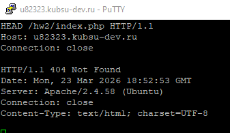
После выполнения всех запросов скриншоты добавлены в локальный репозиторий, закоммичены и отправлены на GitHub.
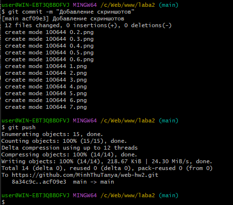
На сервере выполнен git pull и повторное копирование в ~/www/hw2.
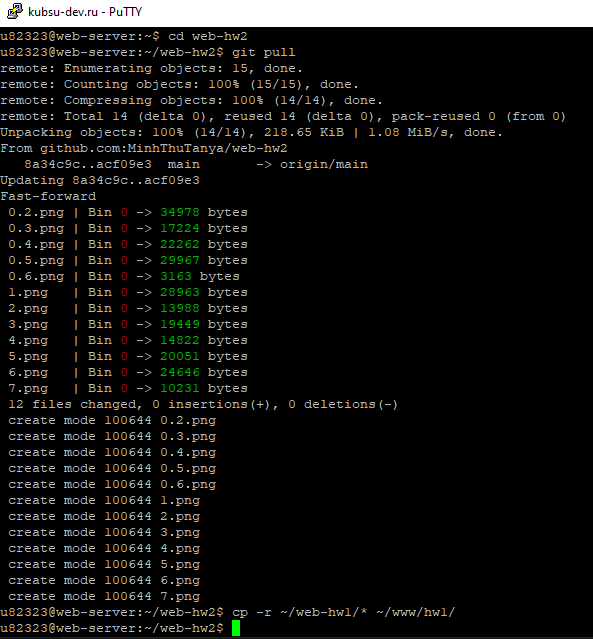